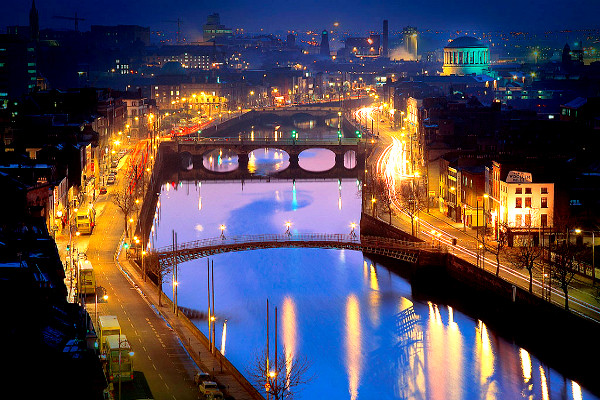
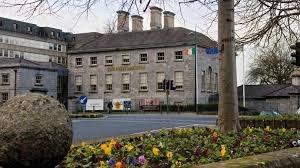
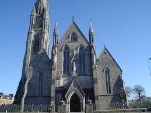
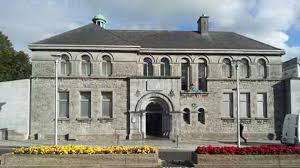

Limerick
City in the Republic of Ireland
Limerick is a major city in the Republic of Ireland, set in Munster province in the south of the country. Its compact old town is known for the medieval-era St. Mary’s Cathedral and St. John’s square, which is lined with Georgian townhouses. Standing along the River Shannon, the 13th-century King John’s Castle is one of the city’s most recognisable sites.The Hunt Museum, tucked inside a stately former custom house, displays Limerick’s most well-known collection of art and cultural artefacts. The Limerick City Gallery of Art focuses on classical and contemporary Irish works, while local history is showcased at the intimate Limerick City Museum. Traces of the gritty Limerick described by Frank McCourt in his memoir, “Angela’s Ashes”, can be seen on walking tours outside the city’s historic core. Limerick is also a gateway to Lough Gur, whose shores are studded with megalithic tombs, and the historic village of Adare.
King John's Castle

King John's Castle is a 13th-century castle located on King's Island in Limerick, Ireland, next to the River Shannon. Although the site dates back to 922 when the Vikings lived on the Island, the castle itself was built on the orders of King John in 1200.
Address: Nicholas St, Limerick
Hours:
Sunday 9:30a.m.–4:30p.m.
Monday 9:30a.m.–4:30p.m.
Tuesday 9:30a.m.–4:30p.m.
Wednesday 9:30a.m.–4:30p.m.
Thursday 9:30a.m.–4:30p.m.
Friday 9:30a.m.–4:30p.m.
Saturday 9:30a.m.–4:30p.m.
Hunt Museume

The Hunt Museum preserves and exhibits the original artefacts gathered, over a life time, by John and Gertrude Hunt and known as the Hunt Collection. The Museum also displays its own collections, as well as visiting exhibitions of Local, National and International significance with the overall aim of maximising their cultural and educational potential for the people of Limerick and Ireland.
Address: The Custom House, Rutland St, Limerick, V94 EV8Ak
Hours:
Sunday 2–5p.m.
Monday 10a.m.–5p.m.
Tuesday 10a.m.–5p.m.
Wednesday 10a.m.–5p.m.
Thursday 10a.m.–5p.m.
Friday 10a.m.–5p.m.
Saturday 10a.m.–5p.m.
St John's Cathedral

St. John's Cathedral is a Roman Catholic cathedral in Limerick, Ireland. Designed by the architect Philip Charles Hardwick, it has been in continuous use since it was built in 1861. It replaced a chapel founded in 1753. The most recent restoration work carried out was in 2003/2004 on the roof and exterior stonework.
Address: Limerick
Hours:
Sunday 9:30a.m.–4:30p.m.
Monday 9:30a.m.–4:30p.m.
Tuesday 9:30a.m.–4:30p.m.
Wednesday 9:30a.m.–4:30p.m.
Thursday 9:30a.m.–4:30p.m.
Friday 9:30a.m.–4:30p.m.
Saturday 9:30a.m.–4:30p.m.
Limerick City Gallery of Art

Limerick City Gallery of Art is an art museum in the city of Limerick, Ireland. It is run by Limerick City Council and is located in Pery Square. The gallery is housed in a Romanesque Revival building which was constructed in 1906 as a Carnegie library and museum
Address: Carnegie Building, Pery Square, Limerick, V94 E67F
Hours:
Sunday 12–5p.m.
Monday 10a.m.–5p.m.
Tuesday 10a.m.–5p.m.
Wednesday 10a.m.–5p.m.
Thursday 10a.m.–7:30p.m.
Friday 10a.m.–5p.m.
Saturday 10a.m.–5p.m.